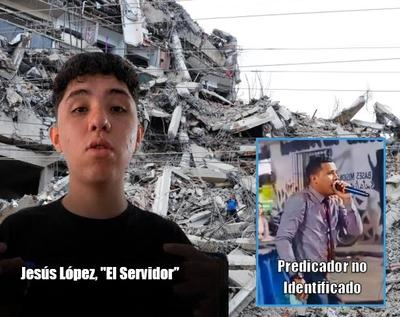

Cada vez que ocurre una tragedia natural, aparece un fenómeno que se vuelve más frecuente: supuestos «profetas» asegurando que ellos ya lo habían anunciado, o incluso videos donde presuntamente lo anuncian con anticipación.


Tras el devastador doble terremoto que sacudió Venezuela el pasado miércoles 24 de junio, que provocó centenares de muertos, miles de heridos y enormes pérdidas materiales, surgieron de inmediato en las redes sociales videos de predicadores afirmando que ellos ya lo habían profetizado, o incluso videos anteriores al evento (o supuestamente anteriores), presagiando que algo así iba a ocurrir. Y es que las profecías generalmente aciertan… porque nunca dicen nada concreto. Te dicen, por ejemplo, que habrá un terremoto en Caracas, pero no te dicen cuándo, por lo que se acierta si ocurre uno o dos meses después, o dos o tres años después. Y si nunca ocurre, tiende a olvidarse.
Por lo general se trata de pastores o predicadores cristianos que asumen el papel de «profetas», y apelan a pasajes del Nuevo Testamento (como el discurso escatológico de Mateo 24:7, que menciona que habrá «pestes, y hambres, y terremotos por diferentes lugares»). Al ser los terremotos una «señal bíblica» constante de los supuestos «últimos tiempos», cualquier sismo fuerte es interpretado de inmediato por los fieles como la confirmación de lo que esos predicadores ya venían anunciando de forma generalizada durante años. Sin embargo, lo más llamativo y preocupante es que miles de personas conviertan en héroes a estos «profetas» creadores de contenido, en momentos cuando aún el país atraviesa por mucho dolor.
Después de la tragedia de Venezuela se ha viralizado un video donde aparece un predicador no identificado, supuestamente un pastor dentro de su iglesia, vistiendo camisa gris manga larga y corbata rojo oscuro, quien con micrófono en mano grita que «Dios» le había mostrado escenas de dolor, sangre, lágrimas y destrucción, y anuncia específicamente un terremoto que afectaría a Caracas. Y relaciona ese mensaje con un llamado al arrepentimiento y al abandono de prácticas que, según él, no le agradan a «Dios». Pero lo curioso es que, aunque dicho video fue reproducido por muchos medios de comunicación escritos y televisivos que se autocalifican de «profesionales», no se tomaron la molestia de verificar antes quién era esa persona, cuáles eran sus antecedentes, y ni siquiera cuándo fue grabado el video. Así que, aunque lo más sensato es descartarlo, ha venido a encender el fervor cristiano de los usuarios de las redes sociales, y contribuido a aportar rating a esos medios «profesionales» (lo que significa dinero).
Sin embargo hay otro caso quizás menos difundido. Se trata de un joven predicador de redes sociales llamado Jesús López, venezolano, y conocido en TikTok como «El Servidor». Su video, publicado el 13 de mayo de 2026 (varias semanas antes del terremoto), fue verificado por ciertos medios de comunicación, por lo que nadie discute su anticipación a los hechos. Pero que un video sea auténtico, no significa que sea profecía. En este caso, al analizar el contenido, aparece un patrón muy común entre quienes dicen recibir mensajes divinos: en lugar de señalar con precisión una ciudad, una fecha y las características del evento, el predicador tiktokero menciona prácticamente todo el territorio venezolano: Caracas, Valencia, Amazonas, Bolívar, Mérida, Maracaibo, Sucre, Táchira, Cojedes, Puerto Ordaz, Puerto Ayacucho, las islas y muchas otras regiones. En otras palabras, lanzó una red gigantesca, esperando que algún pez quedara atrapado. Y paradójicamente, una de las zonas más devastadas por el terremoto, La Guaira, ni siquiera fue mencionada.
Obviamente, esto no es un mensaje divino, es una estrategia estadísticamente favorable. Si alguien anuncia durante algún tiempo que «habrá un gran terremoto en algún lugar de Venezuela», tarde o temprano ocurrirá un sismo importante en alguna región. Venezuela se encuentra sobre un límite tectónico activo, y los terremotos forman parte de su realidad geológica. Así que lo extraordinario no sería anunciar que habrá un terremoto, sino indicar exactamente dónde, cuándo, con qué magnitud, y cuáles poblaciones resultarán afectadas. Pero eso nunca ocurre.
Pero independientemente de lo anterior, existe también un fenómeno psicológico muy conocido: el sesgo de la memoria. Estos predicadores publican continuamente advertencias sobre guerras, terremotos, inundaciones, epidemias, colapsos económicos, juicios divinos y el «inminente fin del mundo». Y la inmensa mayoría de sus anuncios jamás se cumple. Sin embargo, cuando finalmente alguno coincide parcialmente con un acontecimiento real, los seguidores rescatan únicamente ese video, y olvidan decenas o incluso cientos de predicciones fallidas. Es lo mismo que pasa con las máquinas tragamonedas. Se trata del mecanismo conocido como sesgo de confirmación: las personas recuerdan los aciertos aparentes, y eliminan mentalmente todos los errores. Y nacen así los «falsos profetas». Bueno, en realidad eso es una redundancia, ya que todos los profetas son falsos. Absolutamente nadie puede predecir el futuro. Pero en todo caso, se trata de «profetas» que no es que acierten mucho, sino que la gente olvida casi todos sus fracasos.
El verdadero milagro en estos casos es mucho más terrenal que «espiritual». Consiste en convertir el miedo en ingresos, ya que las redes sociales recompensan económicamente aquello que genera emociones intensas, y pocas emociones producen más interacción que el miedo. De esta forma, un video titulado «Dios me reveló que habrá un terremoto», puede permanecer ignorado durante semanas o meses, pero si de pronto ocurre un sismo importante, ese mismo video puede alcanzar millones de reproducciones en pocas horas. Y con ello llegan nuevos seguidores, mayor visibilidad, invitaciones, entrevistas, transmisiones en vivo. Pero sobre todo, donaciones.
En realidad, las plataformas digitales pagan relativamente poco por las reproducciones. Pero el verdadero negocio suele encontrarse en los regalos enviados durante transmisiones en vivo, las ofrendas electrónicas, las transferencias bancarias, las cuentas de PayPal, y otros mecanismos mediante los cuales seguidores convencidos entregan su dinero al supuesto «mensajero de Dios». Así, el desastre humano se transforma en una oportunidad económica. Y mientras miles de familias buscan desaparecidos, lloran por sus muertos o intentan reconstruir sus hogares, surgen predicadores interesados no en aliviar el sufrimiento de los damnificados, no, ellos se concentran en demostrar que decían la verdad cuando proclamaron que «Dios les habló». Ese es el centro de sus prioridades.
Existe sin embargo, un problema en el ámbito de la teología. Supongamos por un momento que «Dios» realmente desea salvar vidas antes de una catástrofe. ¿Por qué elegiría un método tan burdo e ineficaz para enviar un aviso a quienes serían afectados? ¿Por qué elegiría comunicar un mensaje tan importante a un predicador desconocido, para que él o alguien más lo publique en un video a través de TikTok, y lo vean sólo sus seguidores? ¿Por qué depender de algoritmos, seguidores, compartidos y viralizaciones? ¿Por qué mejor no advierte «Dios» directamente a toda la población en riesgo del futuro peligro?
Si estamos hablando de un ser omnipotente, las posibilidades son infinitas. Podría, si él quisiera, manifestarse simultáneamente a millones de personas. Podría enviar un mensaje inequívoco simultáneamente en todas las pantallas de la futura zona afectada. Podría comunicarse al mismo tiempo en todos los idiomas o dialectos que allí se hablen. Podría producir un fenómeno extraordinario visible y que fuera imposible de confundir con una ilusión o montaje. Podría ordenar la evacuación de toda la zona con absoluta claridad. Nadie tendría que depender del algoritmo de una red social para enterarse. Pero opta por el sistema menos eficaz imaginable: confiar un mensaje tan vital a una persona de una credibilidad reducida a su círculo, y esperar que sus seguidores (que no son necesariamente habitantes de la futura zona afectada) vean aquel contenido.
Aunque, hay una pregunta todavía más incómoda: si «Dios» conoce el futuro con absoluta certeza, si posee un poder ilimitado y si ama profundamente a la humanidad, ¿por qué mejor no simplemente evita la tragedia? ¿Por qué permitir que haya centenares de muertos, enviando advertencias ambiguas a unos pocos creyentes? ¿Por qué no impedir el colapso de los edificios? ¿Por qué no neutralizar el terremoto? ¿Por qué no desviar la energía acumulada en las fallas geológicas hacia liberaciones graduales e inofensivas? Salvar vidas siempre resulta mejor que anunciar que habrá muertos.
Lo que pasa es que ocurre en estos casos una explotación del pensamiento mágico-supersticioso por parte de oportunistas que sólo buscan su propio beneficio. Porque los terremotos no tienen que ver con «pecados», sino con la geología. Ocurren porque enormes placas tectónicas acumulan tensiones durante años o siglos, hasta liberar súbitamente esa energía. Nunca distinguen entre creyentes y ateos, ni respetan iglesias o castigan idolatrías. Nunca premian virtudes. Simplemente obedecen las leyes de la física. Por lo que atribuir la culpa de todo lo ocurrido a las mismas víctimas, es una idea tan grotesca como injusta. Quienes murieron bajo los escombros, no eran peores personas que quienes sobrevivieron.
Después de una catástrofe como ésta, lo que una sociedad necesita no son «profetas» reclamando reconocimiento. Necesita ingenieros evaluando estructuras, geólogos estudiando las fallas, médicos atendiendo heridos, psicólogos acompañando a quienes perdieron familiares, bomberos rescatando sobrevivientes, voluntarios distribuyendo alimentos, y científicos desarrollando mejores sistemas de construcción y alerta temprana. Las tragedias nunca deberían convertirse en campañas publicitarias para fortalecer ministerios religiosos, ni en oportunidades para incrementar seguidores y donaciones.
El verdadero valor de un creador de contenido no se mide por la cantidad de veces que dice haber acertado una predicción, sino por cuánto contribuye a reducir el sufrimiento de quienes hoy necesitan ayuda. Porque mientras algunos buscan demostrar que «Dios les habló», otros, silenciosamente, están haciendo el trabajo que realmente salva vidas.
[Godless Freeman]
Comentarios
Comments powered by Disqus